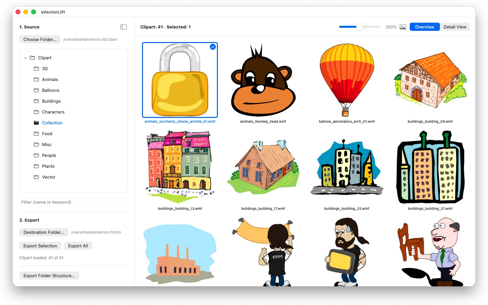
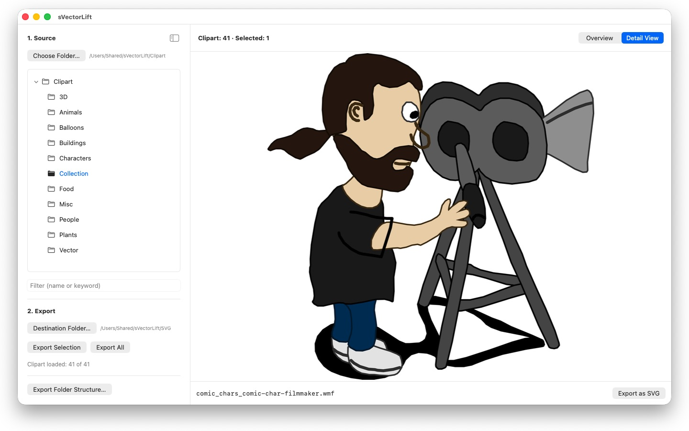

Thousands of clipart images on those old CorelDRAW CDs — locked in dead file formats. sVectorLift turns them back into artwork you can actually use today.


Somewhere on a shelf sits a CD full of clipart you paid for years ago. The files are still there — but nothing on your Mac will open them.
sVectorLift puts that artwork back to work. It rebuilds each drawing as a true SVG: sharp at any size, editable, and ready to drop straight into Illustrator, Affinity, Inkscape, Sketch, Figma — or your website. Not merely viewable again. Usable again. That is the lift in the name: old vector art, raised to the level of the tools you use today.
WHAT IT OPENS
- CorelDRAW documents (.cdr), versions 6 through 9
- Corel Binary Meta File (.cmx) — including the old CDRX variant that other tools refuse to read
- Windows Metafile (.wmf)
- Computer Graphics Metafile (.cgm)
- QuickDraw 3D Metafiles (.3dm, .3dmf), rendered as an image
- Scalable Vector Graphics (.svg), shown directly
Many files with a .cdr extension are not actually CorelDRAW documents but CMX — which is exactly why the usual converters fail on them. sVectorLift reads both.
sVectorLift is built for clipart libraries: drawings, symbols, illustrations. It is not a page-layout tool and does not aim to reproduce multi-page brochures or print templates.
A REAL VECTOR CONVERSION
This is not a screenshot of a preview thumbnail. sVectorLift parses the actual drawing: paths and Bézier curves, fill colors, gradients, outlines and dash patterns, pattern and texture fills, embedded photos, and text objects. What comes out is genuine vector data you can scale, recolor, and edit — not a picture of a drawing.
Purely raster images are exported as PNG instead, so nothing is lost.
BROWSE YOUR LIBRARY
- Folder tree for the whole clipart collection, with subfolders
- Grid of sharp vector thumbnails, with a size slider
- Detail view with arrow-key navigation through the folder
- Filter by name or keyword
- Multi-selection like in Photos: click, ⌘-click, ⇧-click, rubber-band, ⌘A
- Open a single file straight from the Finder (Open With, or double-click)
- Recent folders that remember where you left off — subfolder and selected file
- Export a selection or an entire folder in one step
- Convert entire folder structures, subfolders included, in one go — the structure is preserved in the destination folder
- Rename, show in Finder, move to Trash
FAST AND CAREFUL WITH YOUR MAC
Thumbnails are rendered only for what you actually see, in the background, and cached. Large folders open immediately instead of freezing while thousands of files are processed.
24 languages: English, German, French, Italian, Spanish, Portuguese (Brazil and Portugal), Dutch, Swedish, Norwegian, Finnish, Czech, Polish, Hungarian, Romanian, Croatian, Russian, Ukrainian, Turkish, Persian, Thai, Japanese, Korean, and Chinese (Simplified and Traditional).
Everything stays on your Mac. No network connections, no accounts, no data collection.
CorelDRAW is a trademark of Corel Corporation. sVectorLift is an independent app and is not affiliated with, or endorsed by, Corel.
- Requires macOS 14 or later
- 24 languages
- Support: SwiftAppsBavaria@gmx.net
More Apps
sCollect
Organize music, movies, audiobooks, ebooks, and other collections in a media library.
sCollectPlay
The player for the media library: play music, movies, audiobooks, and podcasts simply from a folder, an iTunes XML file, or an sCollect library — the files’ tags stay untouched.
sName2Date
Write the date from the file name into photos, movies, and audio recordings as the capture date — so that a file like IMG_20240115_103000.jpg is sorted correctly in any photo manager.
sName2Date Lite
The edition for one file per run: write the date from the file name into a photo, a movie, or an audio recording as the capture date, set it by hand, put the name into ISO notation, and undo everything with ⌘Z — the same capabilities as sName2Date, just without entire folders.
SwiftRename
From memory card to archive: name photos and videos by capture time, file them by year, month or day, spot duplicates — RAW included.
sCollectPlay Lite
The lean edition of sCollectPlay: simply open a folder, an iTunes XML file, or an sCollect library and play music, movies, audiobooks, and podcasts from it — with playlists, audio and subtitle tracks, slow motion, and frame-by-frame stepping. One source per session; the column browser, custom playlists, and recently used sources are reserved for the full version.
sBikeBridge
Analyze bike rides without uploading them to a portal: import FIT files from any bike computer that records in this format, plus GPX and TCX. Rides are kept in a dedicated library on the Mac — with map, power and heart rate, photos, and notes; the import detects duplicates. Stats by year or month and filters by distance, elevation gain, and duration make rides comparable. The map is also available offline if desired.